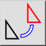
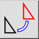
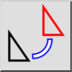
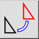

Rotiracija dva
Toolbar / Icon:
 

Menu: Uredi > Rotiracija dva
Shortcut: R, 2
Commands: rotate2 | r2
Toolbar / Icon:
 

Menu: Uredi > Rotiracija dva
Shortcut: R, 2
Commands: rotate2 | r2
Rotira objekte med dvema različnima središčema. Tipična uproraba tega orodja je pri rotiranju objektov okrog enega središča in pri tem hkrati ohranit njihovo orientacijo.